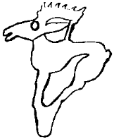

Bizlerden biri, bizlerden biri” ve “becerikliyiz, becerikliyiz, O becerik bizim göbek adımız” diye mırıldanarak Azman’ın sırtına atladım. Kitan sürüsünün son atı ufukta yitinceye kadar sazların içinde bekledim. Sonra tam aksi yöne, geriye, batıya doğru topukladım. Biliyordum ki, Azman’ın sırtında kımıldamadan beklediğim o yumuşak kumlukta şimdi dört tane derin nal izi vardır ve içlerine bulanık bir su doluyordur. Dönüp bakmadım bile. Azman,
“Sen git, boynuna sarıldığın o yeni Azman’ın ile topukla” der gibi isteksizdi. Bu isteksizlikte Kitan ordusunun baygın bakışlı, taylıktan yeni çıkmış çıtır kısraklarının adamın, yani bu durumda aygırın, başını döndüren, çıldırtan kokularının da bir payı olabilirdi. Boğa çükünden kamçımı iki sağrısında art arda şaplatınca bu isteksizlik kalmadı. Topukladık. “Bizlerden biri, Kökçö” diye düşünmeye devam ettim.
Kimdik gerçekten biz? Evet, atalarım beş yüz yıl önce Batı’dan gelmiş. Evci kılığımız kıyafetimiz aynen etrafımızdakilere benzer, ama yazımız hiç kimseninki gibi değil. Nedense hepimizin üç adı var. Tengere Tardu Tigin, lnançu Yaşıl Şaman, daha eskilerden llteriş Kapgan Kağan. Bir Töremiz var, başka pek bir şeyimiz de yok gibi. Aslında o da yok, yani yazılı değil. lnançu Yaşıl Şaman’ın aktardığı bir söylenceye göre, atalarımız Batı bozkırlarından ilk geldiklerinde bu Töre’miz yazılı imiş, o çağda kâğıdı bilmedikleri için, beyaz huş ağacı kabuklarına yumurta akında ezilmiş odun isiyle yazmışlarmış. Bütün boylar üzerine titrermiş. Bir göç sırasında o çağın, işte o çağ hangisi ise, budun tarafından nedense pek tutuları bunak başşamanı, Töre’yi taşıyan ve bu yüzden kutlu deve demek olan Devekut’u derin bir çayı geçtikleri sırada, suyun tam ortasında ıhlatmamış mı! Ihlatmış. Sırtında koca bir denk Töre taşıyan devecik çöküvermiş suyun içine. Serin suyla neşelenip bir de yuvarlanmamış mı Devekut oğlu Devekut? Yuvarlanmış. Töre dengi dağılmış. Ağaç kabuğundan sayfalar sulara kapılmış. Uşaklar, balalar, çağalar atlamış, çoğunu yakalamışlar, ama olan olmuş. Yazılar silinmiş. Önemli oldukları için olsa gerek, kızıl aşı boyası ile yazılmış bazı sözcükler kalmış ancak. Onlar bile doğruca okunmuyormuş! Bilenler bildiklerinden yazarak yeniden oluşturmak istemişler Töre’yi. Uzun, sıkıcı kengeşler olmuş. Aylarca kengeşip durmuşlar ama kendi aralarında anlaşamadıkları için tek bir töre yazamamışlar.
Boyların aksakallıları “Tanrı savsın, sonra boylar dağılır, ev başına bir Töre olur” dediği için, ayrı ayrı da yazmamışlar. Gerçi yine aynı kapıya çıkmış. Herkes bildiğini okumuş. Tek bir Töre’nin toparlayıcılığı olmayınca, boylar, arada bir iki kez iyice silkilip kendilerine getirilmelerine karşın, uzunca bir süre sonunda da olsa, yine dağılmışlar. Dokuz boy Oğuz, On Uygurlar, Basmıllar, Kırgızlar, Tölösler, Bayırkular, say sayabildiğin kadar! Kalın Oğuz, yani kalabalık boylar Türük olamamışlar, yani dürülüp-derlenememişler, toparlanmamışlar. Gerçeği anlamakta güçlük çeken ve kendilerine inatla “Türük” demeyi sürdüren mutlu, fakat küçük bir bölük Otüken’de tutunmaya çalışmış, işte ben Tengere Tardu Tigin, o bölüğün soyundan geliyorum! Töre’mizin yazılı olduğu topraklara gidiyorum. Hanlar Hanı Bayındır Han’ın önünde yer öpeceğim. Belki, evet belki, kendime bile söylemekten çekindiğim bir şey var düşümün bir kıyıcısında, belki elimde yazılı bir Töre ile dönersem, kaftanımı eğnime giyersem, Doğu bozkırlarını bir kez daha derleyip toparlayabilirim! Ben Tengere Tardu Tigin, atalarım Bumin’den, lstemi’den, Kapgan’dan neyim eksik? Alt yanı belki bir budun. Ama kim söylüyor ki bizler her yerde değiliz? Onca kişi havaya uçup gitmedi ya? Ben dönüp geleyim, mezarda olsa çıkıp gelir budun.
Öte yandan Azman, bazen tüm inancımı yitiriyorum, lnançu amcamın deyimiyle bir kofer, bir inanmaz oluyorum galiba öylesi zamanlarda. Elle tutulmayan, gözle görülmeyen, her boya, her soya göre değişen bir Töre ve artık yalnızca bizim ailemizin ve nökerlerimizin bildiği bir avuç söz ile ne olur Azman? Ne demek mesela nahlat avot? Babalarımızın yatağıymış, peki niye doğrudan “babalarımızın yatağı” demiyoruz? Hangi söz baba, hangi söz yatak demek, onu bile bilmiyorum. Herhalde birincisi baba, İkincisi yatak olmalı. Bizim dilimizdeki gibi. İnsan böyle düşünüyor. Tuhaf ama, belki de diğer türlüdür. Büyüklerime bu tür sözlerin nece olduğunu her soruşumda, “dilimiz işte, kutsal dilimiz” diye omuz silkerek gülüp geçtiler. Evlenip gerdeğe girdiğim gün söyleyeceklermiş. Peki gerçek dilimiz buysa, o zaman niye hep konuştuğumuz dile benzemiyor? Her gün konuştuğumuz, kendisi ile her işimizi gördüğümüz Türk dili değil mi bizim dilimiz? Başkasının dilini mi konuşuyoruz yoksa? Olabilir tabii, nasıl Kitanlar Uygurca konuşuyorsa, olabilir. Bilmiyorum. Kafam karışık. Bakalım Hanlar Hanı Bayındır Han’ın ülkesinde hangisi konuşuluyor? Aklıma gelmişken, o kadar insan arasında bir tek lnançu amcam büyük hanın adını biraz değişik söylerdi: Bayındır Kohen. Niye acaba?
Bir de efsanelerimiz var, bildiğim. Büyük bozkırın efsaneleri de büyük oluyor haliyle. Güya bizimkiler, yani Batı ve Doğu Bozkırındakilerin hepsi çok, çok eskiden Ha Erez Ha Muvtahat diye bir yerde birlikte yaşıyorlarmış. Anlamı, “söz verilmiş topraklar” imiş. Bu toprak, yaratılış sırasında kaz kılığına girmiş ve kendi de kaz kılığında olan Tanrı’nın yanında uçarak acunu dolaşan Kişi’nin bütün yeryüzünü kaplayan suların dibinden ağzıyla çıkardığı ve Köktanrı’nın bakmadığı bir sırada ağzından bıraktığı toprak parçasının büyüyüp şişmesi ile oluşmuş. Köktanrı, ilk atamız Kişi’nin ne kadar kurnaz, ne kadar iş bitirici olduğunu görünce:
“Ey Kişi, beni dolandırmaya kalktın! Ama akıllısın. Bak işte diğer yaratıklarda bu yok. Bu yollar sana helal olsun! Bu yüzden seni gözüm gördü, gönlüm sevdi. Sen ve senden türeyenler benim seçilmiş çocuklarımsınız. Güzeller içinden bir seni, bir seni seçtim! Bu toprağı size veriyorum. Elinizden alan olursa onlardan alıp yine size vereceğim” demiş.
Kısaca, atalarım Köktanrı’nın seçilmişleri olduğu için bu yeryüzü cenneti onlara, yalnız onlara verilmişmiş. Köktanrı’nın en sevgili kuluymuşlar. Orada ırmaklar süt akarmış ve bunlar acıktıkça, günde üç kez, gökten “manna” diye tatlı bir yiyecek inermiş. Bazen saygısızlık edip kutsal ülkeye girmeye çalışan ya da el uzatanlar olurmuş ama bizimkiler öyle baltaya topuza el sunmadan, kağanlarına der, o da Köktanrı’ya söylermiş. Gökten iki iyi yürekli melek iner, ateşten kılıçları ile bu densiz yabancıları ağıldaki kuzularına, beşikteki eniklerine kadar kırıp geri dönermiş!
Bu yeryüzü cennetinin en güzel kenti, Köktanrı için büyük bir sunağı olan, Yeruşalayim adındaki kentmiş. Bir söylenceye göre, Kişi toprağı ağzından suya düşürünce, bütün evleri ve tapınakları ile hazır olarak onaya çıkmış bu kent. Kişi,
“Mımm, ne güzel bir kent, ne güzel bir yer, uş alayım” diye mırıldanmış.
“Yer uş alayım,” bu yeri hemen şimdi alayım demek tabii. Sonra söylene söylene tek sözcük olmuş. Güzel bir öykü, ama içimde bir sezgi bu kentin adının da o bilmediğimiz, anlamadığımız gizli ve kutsal dilimizden geldiğini söylüyor. Çünkü böyle bir huyumuz var, biliyorum. Başka dillerden sözcükleri benzeterek, dilimizdeki bir sözcüğe uydurarak söylüyoruz.
Bu kentten ve tüm söz verilmiş topraklardan ayrılışlarının öyküsünü ise tam bilmiyorum. Çok şımarmışlar olsa gerek. Kişioğlu sonraları ne yerse yesin, başta anasından çiğ süt emmiştir. lnançu’ya göre,
“Bu ne biçim manna, bunu ısıtın getirin!”
“Aay, bu süt ırmaklarının az yağlısı yok mu?”
“Haksızlık, haksızlık bu! Komşumuz Abigail Hanım’ın mannasında daha çok bal var!” türü sızıldanma ve şımarıklık karışımı durumlar Köktanrı’nın canını zaten ufaktan ufaktan sıkıyormuş, ama seçilmiş kullarında bunu hoş görüp geçiyormuş. Sonra bir gün bizim Batı boylarından bir Türgeş tigini,
“Bence bu gök yiyecekleri delikanlıyı bozuyor! Şu başıboş dolaşan ceylanları, geyikleri ateşte çevirme yapıp bol tuzla yesek ya!” deyince Köktanrı’nın açığı tutmuş.
Kızmış, öfkelenmiş. Kişioğullarını derlemiş toplamış, cennet ülkesinden sürmüş çıkarmış. Bu işleri kendi yapmamış tabii. Babilliler adlı bir başka buduna söylemiş, onlar sürmüş çıkarmış.
Çığlıklar ata ata tepinen seçilmişler “Sözünde dur Köktanrı, hani buraları bize vermiştin” demişler. O da demiş ki:
“Verdim. Ben sözümdeyim. Size verilmiş olan sizindir. Siz ev sahibisiniz. Babilliler kiracıdır. Ama şimdi hafsakah, paydos! Gidin şöyle bir hava alın gelin.”
Bunlar, hem Batılılar hem de Doğulular, düşmüşler yola. Yollarda aç susuz, çok sürünmüşler, çok kırılmışlar. Gördükleri her ırmağın suyuna süt diye saldırmışlar, gökten hiçbir şey düşmeyince yer üstünde ne buldularsa onları yemişler. Az gitmişler, uz gitmişler, altı ay bir güz gitmişler. Sonunda Ergenekon diye otluk, ağaçlık, dört yanı mor dağlarla çevrili avlık kuşluk bir yere gelmiş konmuşlar. Göç eden erlerin gene gelip konacağı kadar güzel bir yer imiş Ergenekon. Kendilerine avlanmayı ve et yemeyi öğreten, dolayısıyla yollarda açlıktan ölmemelerini sağlayan Türgeş tiginini burada keçe üstünde yükseltmiş, kağan etmişler.
Sonra sayılan çok artmış, ağabey iniye, ini ağabeye kem bakmış. Kişioğlu yanıldığı için, oğul babası gibi olmadığı için, birbirlerine kılıç çekecek duruma gelmişler. Bakmışlar olacak gibi değil, boyların yarısının göç etmesine karar vermişler. Hangi yansının gideceğini anlamak için yarışlar yapılmış. Aksakallar yarışların sonunda ne olacağını ufak bir huş kabuğuna yazmışlar. Bir susağa koymuş, uzun bir direğin tepesine asmışlar. Atlar koşmuş, güreşçiler güreşmiş, okçular ok atışmış, kum bilekli yiğitler oğlak tartış oynamışlar. Doğu boylarının batırları hepsinde Batı batırlarını kuskunlarından tutmuş, yerin dibine batırmış. En son da direğin tepesindeki su kabağına koşar atın sırtından ok atmışlar. Doğunun koca batın Okçu Koca tek bir atışla kabağı delmiş, indirmiş. Huş kabuğunun üstünde “yenen gider” yazılıymış! Meğer Aksakallar şöyle düşünmüş:
“İyi güreşen, at binen, ok atan, başkasının oğlağını çekip elinden alan, her yerde başının çaresine bakar. Yenen gitsin, yenilen bu korunaklı yerde kalsın.”
Eski kişiler işte! Doğu boyları ayaklanmış. Büyük tatsızlıklar olmuş. Sonunda Töre’yi açmış bakmışlar. Açık açık, “yenen gider” yazıyormuş. Doğu budunu homurdana homurdana develerini yüklemiş, yollara düşmüşler, Ötüken’e varıncaya kadar taban tepmişler. Gerçi Ötüken’i çok sevmişler ama Batı’daki uyanıklara da biraz buruk, biraz kırgın kalmışlar hep. İnançu amcam bu öyküyü her anlattığında şöyle bitirirdi:
“Batı boylarının okumaya verdiği önemdir bunu yapan. Bizim aramızda da karaim, yani okumuş sayısı o kadar çok olsaydı, belki bir yazanımız da olurdu, Ergenekon’da kalan biz olurduk!”
“Amca!” diye çığlığı bastığımda on yaşındaki çocukların inanmışlığıyla,
“Doğrusun oğul doğrusun, böyledir bu acunun dört hali, böyledir bu arba’ah olamut, sen iyisi mi bu dediklerimi unut!” derdi.
Benim ak sakallı, bükük belli, yoksul amcam. Tanrı sözünü bağışlasın, tözünü yarlıgasm!
Ah Azman! Bak bin yıllık efsaneleri konuşurken, artık Ötüken’den ne kadar ayrıldık. Selenge’nin Delger koluna saptık. Şimdilik kuzeye, hep kuzeye çıkacağız. Sana ot ve et, bana et ve ot gerek Azman. Kuzey’in yeşil çayırlarından çok ayrılamayız Sonra Delger’i solumuzda bırakacak, Hordil Sarıdağ’ı sağımıza alacak, sola dönerek Şişid Suyunu izleyecek, Yenisey Irmağına ulaşacağız. Sonrasını hiç bilmiyorum Azman. Bildiğim, Yenisey boyunca balan güneşi kovalayacağız, Batı’ya doğru koşacağız. Bir ulu ırmakmış diyorlar. Hiç görmedim Azman.